MyBox用户手册 - 媒体工具 v6.7
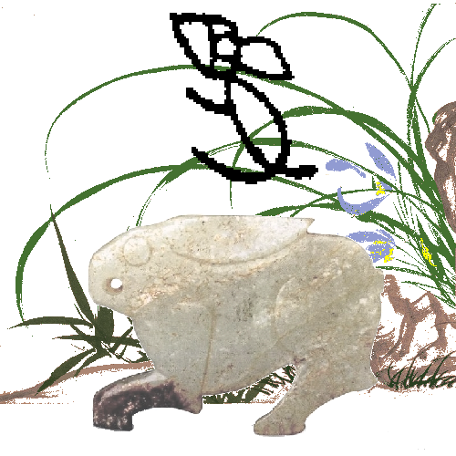
MyBox：简易工具箱
用户手册 - 媒体工具
作者：Mara
版本：6.7
日期：2023-1-21
内容目录
1 简介 3
1.1 主菜单 3
1.2 资源地址 4
1.3 文档 5
1.4 工具的菜单 6
2 播放视频/音频 7
3 管理播放列表 8
4 封装ffmpeg的功能 9
4.1 基础 9
4.2 录屏 11
4.3 批量转换音频/视频 12
4.4 把图片和音频合成为视频 12
4.5 利用ffprobe读取媒体的信息 13
4.6 读取ffmpeg的信息 14
5 游戏-消消乐 15
6 游戏-挖雷 16
这是利用JavaFx开发的图形化桌面应用，目标是提供简单易用的功能。免费开源。
|
内容 |
链接 |
|---|---|
|
项目主页 |
|
|
源代码和编译好的包 |
|
|
提交软件需求和问题报告 |
|
|
数据 |
|
|
文档 |
|
|
镜像 |
|
|
云盘 |
https://pan.baidu.com/s/1fWMRzym_jh075OCX0D8y8A#list/path=%2F |

|
文档名 |
版本 |
修改时间 |
英文 |
中文 |
|---|---|---|---|---|
|
开发日志 |
6.7 |
2023-1-21 |
||
|
快捷键 |
6.5.6 |
2022-6-11 |
||
|
功能列表 |
6.6.2 |
2022-11-30 |
||
|
打包步骤 |
6.3.3 |
2020-9-27 |
||
|
开发指南 |
2.1 |
2020-8-27 |
||
|
用户手册-综述 |
6.7 |
2023-1-21 |
||
|
用户手册-数据工具 |
6.7 |
2023-1-21 |
||
|
用户手册-文档工具 |
6.7 |
2023-1-21 |
||
|
用户手册-图像工具 |
6.7 |
2023-1-21 |
||
|
用户手册-文件工具 |
6.7 |
2023-1-21 |
||
|
用户手册-网络工具 |
6.7 |
2023-1-21 |
||
|
用户手册-媒体工具 |
6.7 |
2023-1-21 |
||
|
用户手册-开发工具 |
6.7 |
2023-1-21 |
||
|
示例-笔记 |
6.6.1 |
2022-11-16 |
||
|
示例-树形 |
6.6.1 |
2022-11-16 |
||
|
示例-收藏的网址 |
6.6.1 |
2022-11-16 |
||
|
示例-SQL |
6.6.1 |
2022-11-16 |
||
|
示例-JShell |
6.6.1 |
2022-11-16 |
||
|
示例-JEXL |
6.6.1 |
2022-11-16 |
||
|
示例-JavaScript |
6.6.1 |
2022-11-16 |
||
|
示例-数学函数 |
6.6.1 |
2022-11-16 |
||
|
示例-行过滤 |
6.6.1 |
2022-11-16 |
||
|
关于-颜色 |
6.6.1 |
2022-11-16 |
||
|
关于-坐标系统 |
6.6.1 |
2022-11-16 |
||
|
关于-媒体 |
6.6.1 |
2022-11-16 |
||
|
关于-数据分析 |
6.6.1 |
2022-11-16 |
||
|
调色盘-常用网页颜色 |
6.7 |
2023-1-21 |
||
|
调色盘-中国传统颜色 |
6.7 |
2023-1-21 |
||
|
调色盘-日本传统颜色 |
6.7 |
2023-1-21 |
||
|
调色盘-来自colorhexa.com颜色 |
6.7 |
2023-1-21 |
||
|
调色盘-MyBox的颜色 |
6.7 |
2023-1-21 |
||
|
图片的故事 |
6.7 |
2023-1-21 |
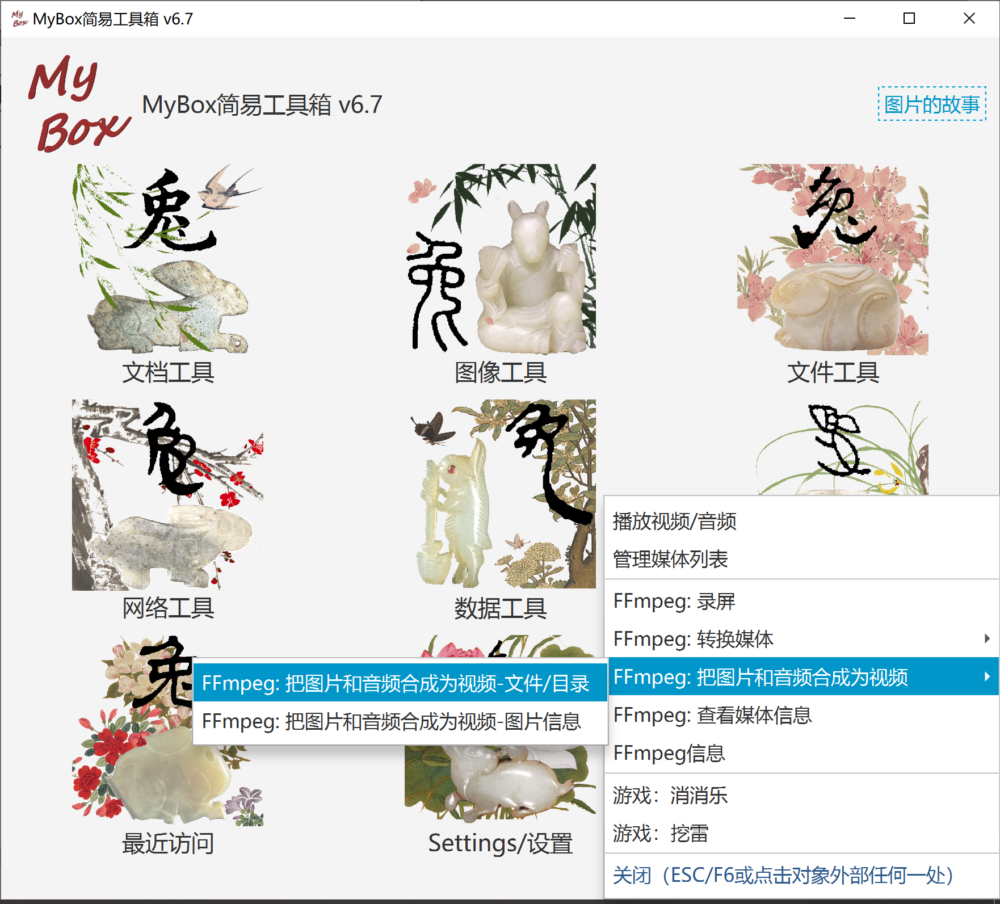
创建/加载播放列表
选项：自动播放、显示毫秒、循环次数、随机顺序
设置：音量、速度（0~8倍）
按键：播放/暂停/停止/上一个/下一个/媒体信息/静音/全屏
全屏时：触屏短暂显示控件、ESC退出全屏
此媒体播放器基于javafx:
支持的容器类型：
AIFF, HLS, MP4, MP3, WAV
支持的编码类型：
AAC, MP3, PCM, H.264/AVC, H.265/HEVC
支持的协议：
FILE, HTTP, HTTPS, JAR, HLS
乖乖和笨笨的声音
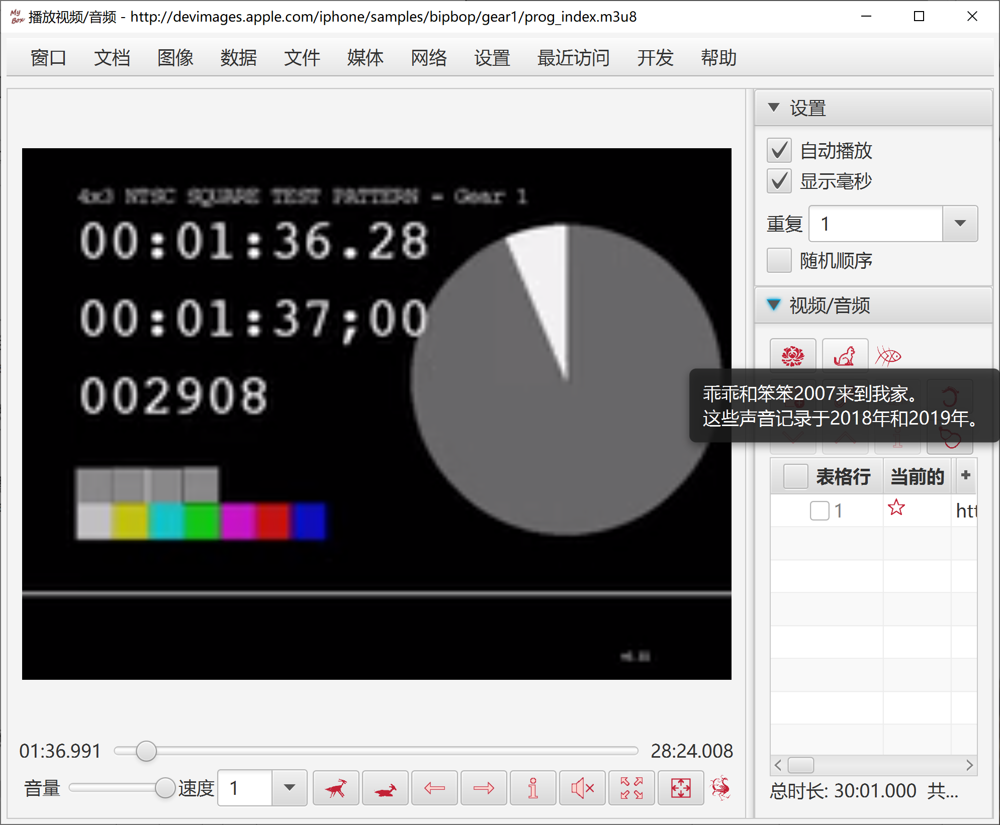
增删改播放列表
增删改播放列表的内容。
读取所支持媒体格式的信息：时长、音频编码、视频编码
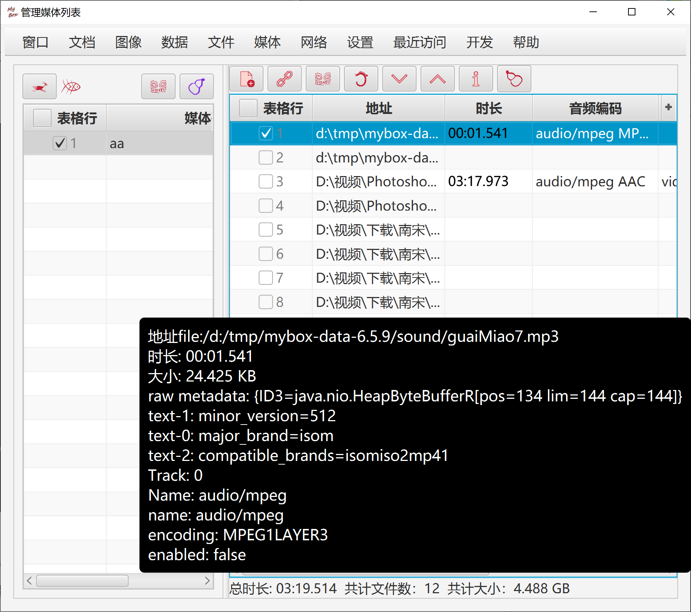
这一组功能依赖于ffmpeg，需要用户自己下载ffmpeg（建议使用静态版本）。
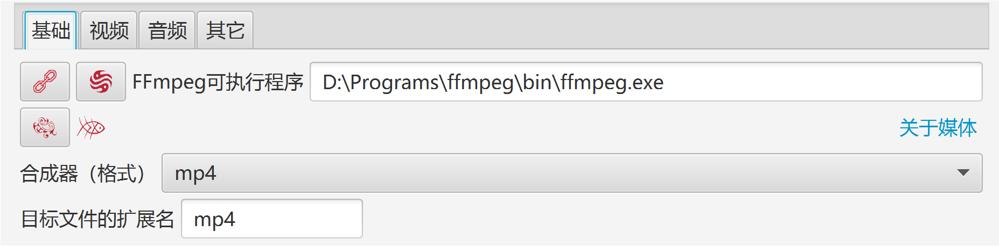
处理媒体的考虑
可选择/设置所有的参数，包括文件格式（合成器）、视频编码、音频编码、字幕、视频帧率、宽高比、音频采样率、改变音量等。
“缺省”按钮：当有NVIDIA时，选择"h264_nvenc"作为视频编码器，以利用硬件加速。
多数播放器支持：合成器"mp4"，视频编码"H.264", 音频编码"AAC"。
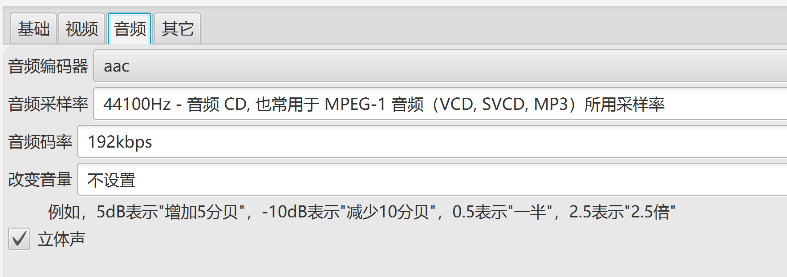
尝试不同的编码器、编码预调、CRF值，以获得适应于你的计算机的设置。
考虑以下因素：
编码器应该足够快以保证不掉帧。
消耗有限的系统资源，以留给其它应用足够的CPU和内存。
生成的文件的质量和大小是可忍受的。
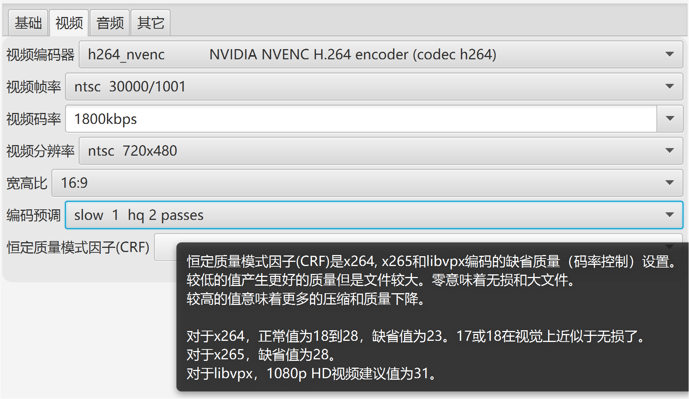
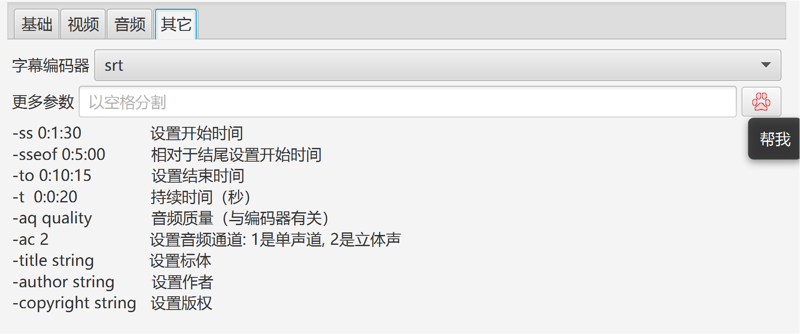
当没有NVIDIA、并且CPU不那么强时：
选择"libx264rgb"作为视频编码器，以跳过从RGB到yuv444p的转换。
选择较快的编码预调。
录制之后，利用视频转换工具以编码器“libx264”将生成的RGB视频转换为yuv444p。
可选是否录视频：
设置线程队列大小。
录制范围：全屏、窗口、矩形。
可选是否录音频：
自动检测声卡，并把第一个声卡作为设备。
设置线程队列大小。
设置延时：
若是”不限制“，则用户按按钮”开始“时立即开始录制。
若是有效值，则在这个时间结束时开始录制。
设置时长：
若是”不限制“，则用户按按钮”停止“时才停止。
若是有效值，则时间结束时自动停止。用户按按钮”停止“也可中止录制。
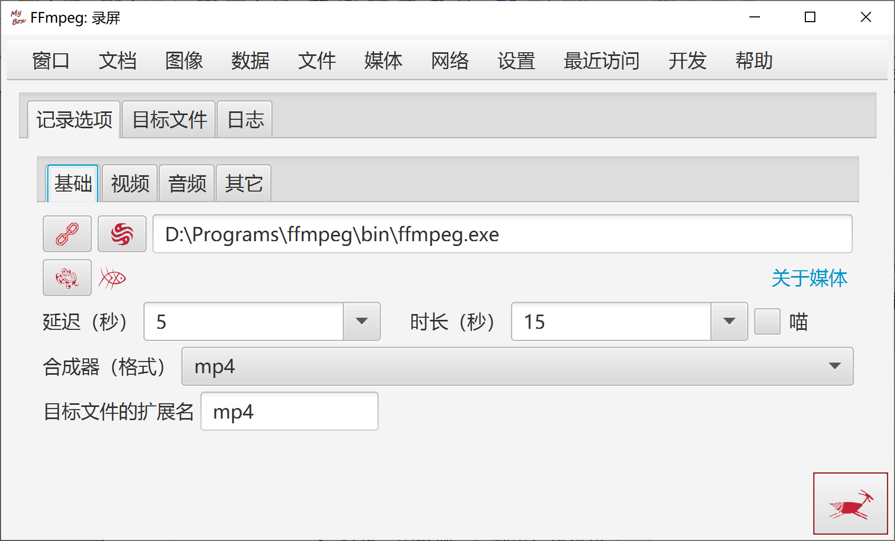
源文件以文件/目录表显示
源文件以流和媒体信息表显示
源文件以文件/目录表显示
源文件以流和媒体信息表显示
可以单独设置每个图片的时长，也可对全部图片设置时长
可选择是否"音频流结束时结束视频"。
图片被自动适应为屏幕大小且保持宽高比。
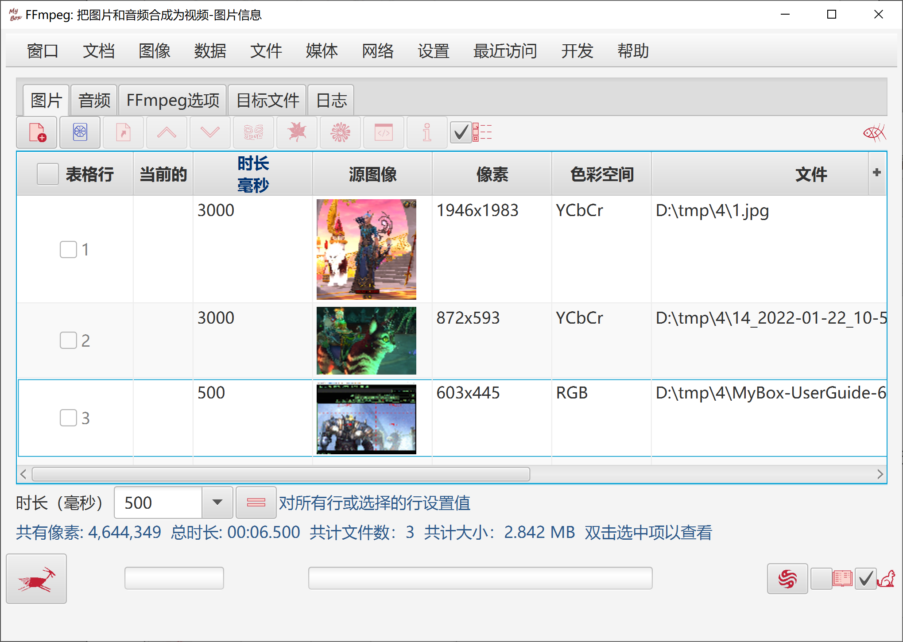
媒体的格式
媒体包含的流
媒体指定时段的包。
可以选择输出格式。

版本、格式、支持的编码解码器、支持的滤镜，以及自定义查询参数。
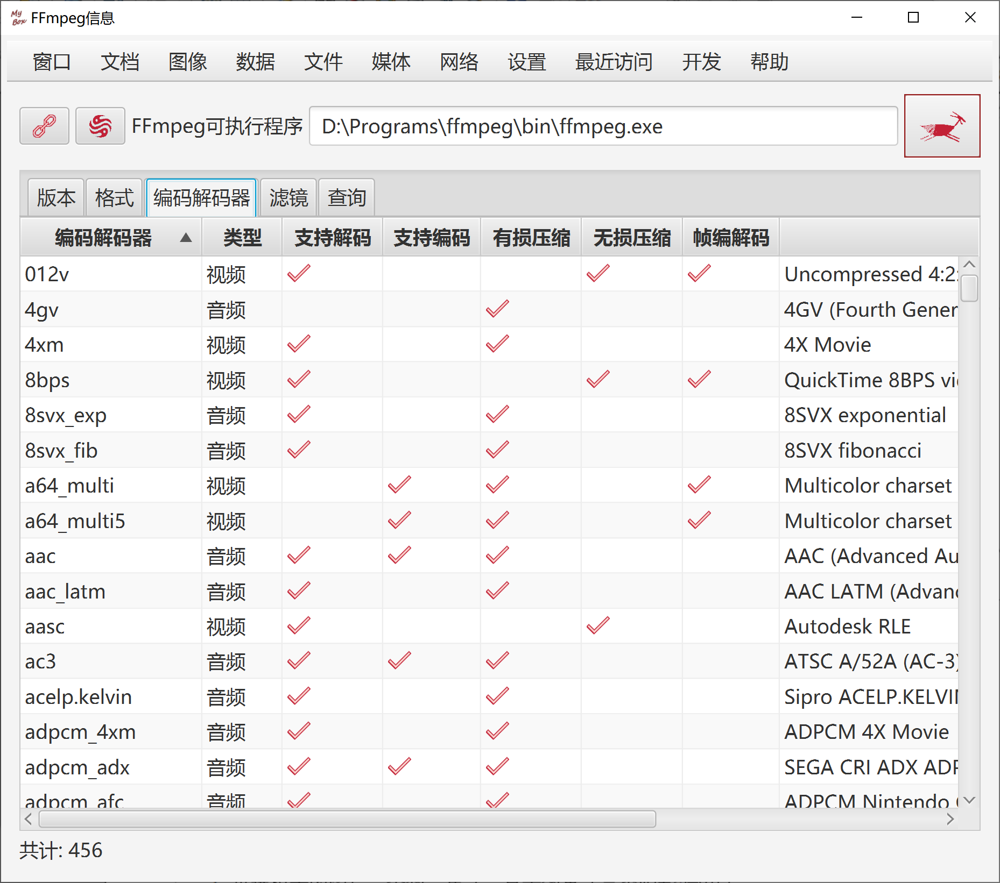
可选棋子的图片、个数、尺寸、显示效果（是否阴影/圆角）。
棋子可以是预定义图片、用户指定的任意图片、或用户选择的颜色。
可选音效：来自乖乖的赞许、来自笨笨的赞许、3连由笨笨赞许其它由乖乖赞许、静音、或任意mp3/wav文件。
可选计分的棋子：只有消除选择的棋子的连线，才能得分。
可设置得分规则：定义不同的连接个数对应的分数值。
可设置僵局（没有有效的交换步骤）时的处理策略：保留得分并重置游戏、制造机会、或弹出提示让用户选择。
可设置：自动玩游戏的速度、消除时的闪烁次数、是否弹出得分。
"帮我"按钮：为用户提示有效的步骤。
"自动玩"按钮：点击即自动玩游戏、再次点击则停止自动玩。
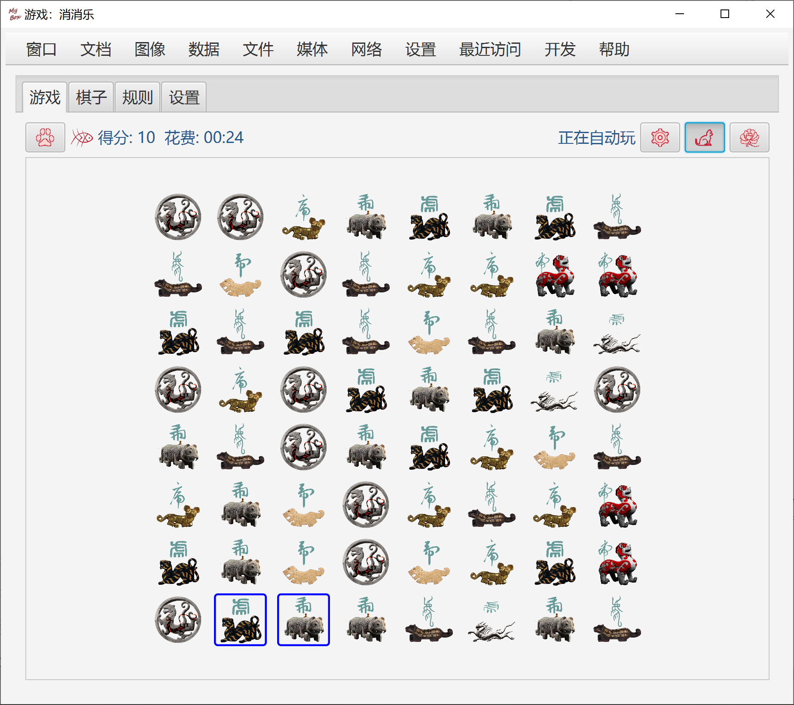
目标：打开所有非地雷的格子，一旦打开地雷就失败。
规则：
游戏开始时，所有格子都是“未打开”状态。
首次点击格子时，开始计时。
计数：已打开的格子数 / 非地雷的格子总数
左键点击格子，若是格子状态为“已打开”则没有任何影响，否则：
若是地雷，则游戏失败。
若不是地雷，则改变这个格子状态为“已打开”。
若打开的格子周围有地雷，则在格子里显示周围地雷的个数
若打开的格子周围没有地雷，则显示为空白，并且自动打开周围的格子；迭代这个过程。
右键点击格子，若是格子状态为“已打开”则没有任何影响，否则：
若格子没有标记，则标记它为“地雷”。
若格子标记是“地雷”，则标记它为“可疑”。
若格子标记是“可疑”，则去除标记。
右键点击只起到标记的作用，不会触雷或打开格子。
双击格子，则：
若是格子状态为“未打开”，则打开这个格子。
打开其周围所有无标记或标记不为“地雷”的格子。
只有当你确信格子周围的地雷都已被正确标记时再双击格子。
当你不幸触雷时：
点击按钮“撤销”，可以假装刚才没有触雷，继续计分计数。
点击按钮“重玩”，可以重新开始刚才那一局，重新计分计数。
点击按钮“新一局”，可以开始不同的一局。
点击按钮“帮我”以偷看所有地雷，点击按钮“撤销”以继续玩。
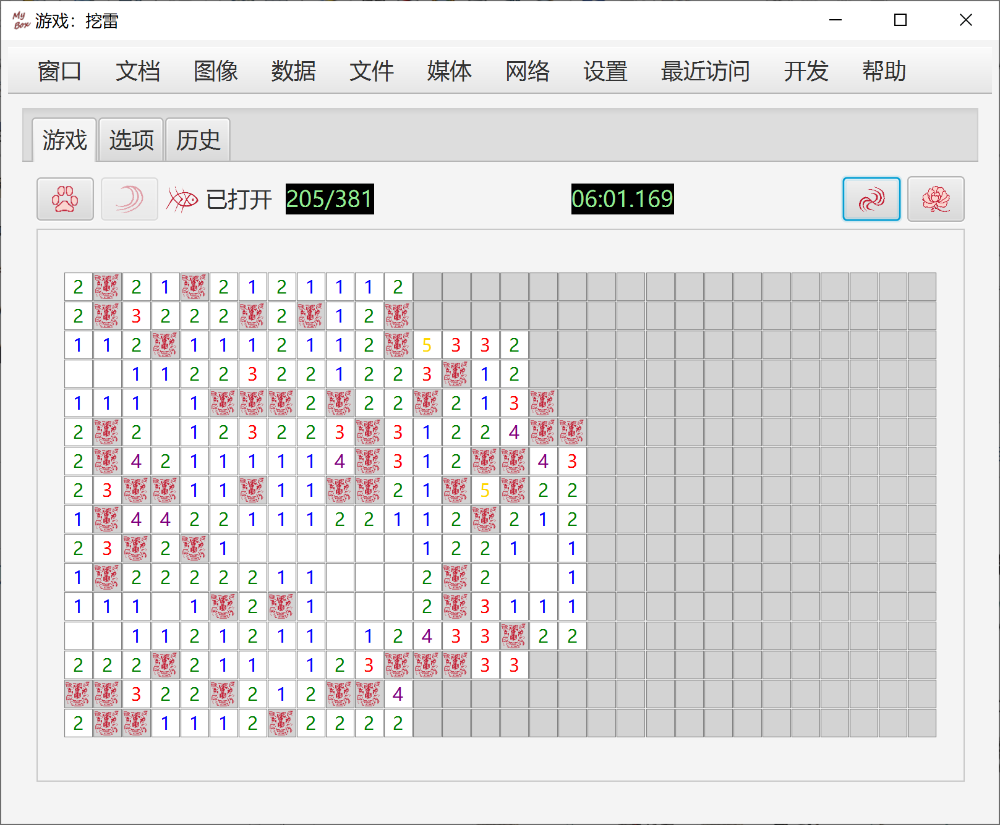
<文档结束>
第